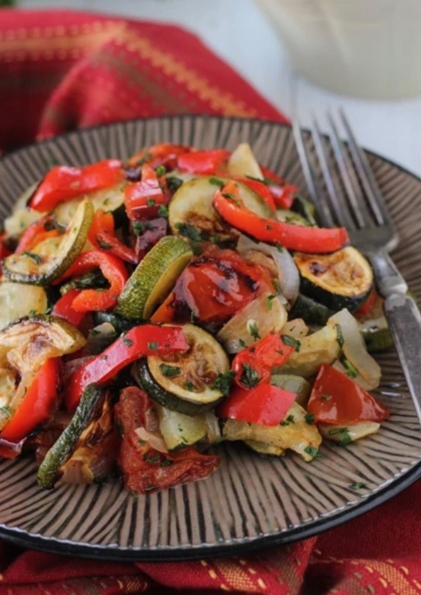
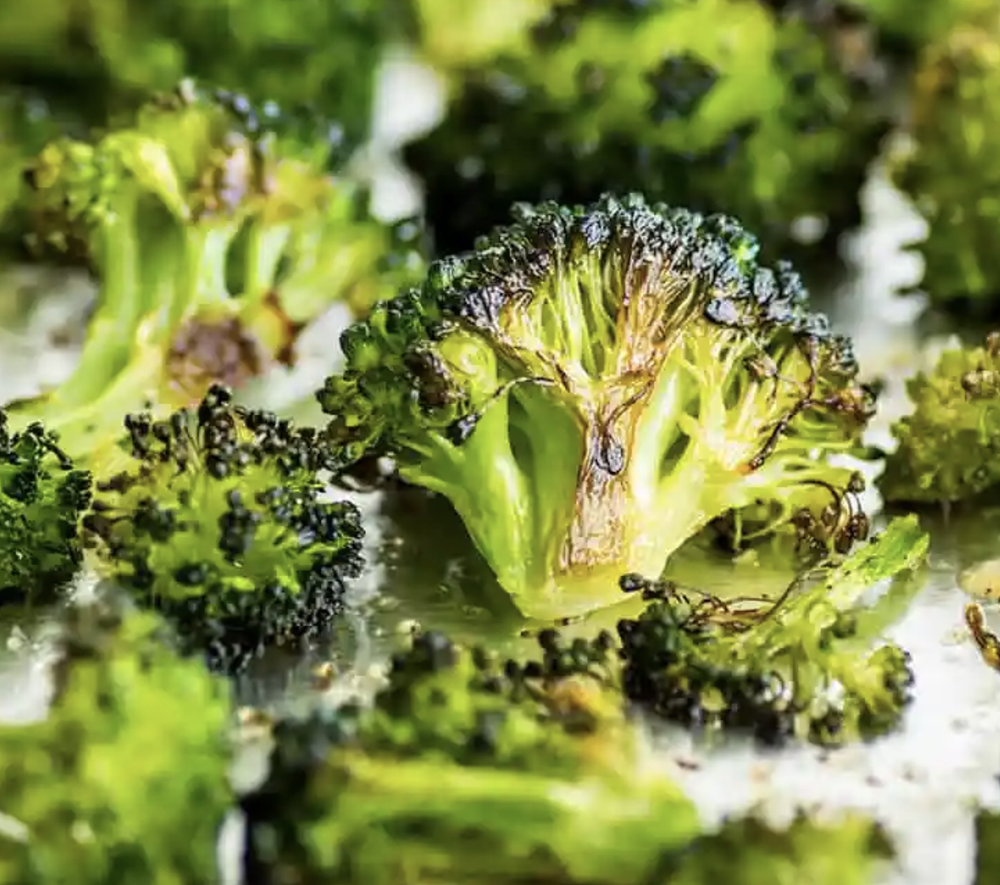
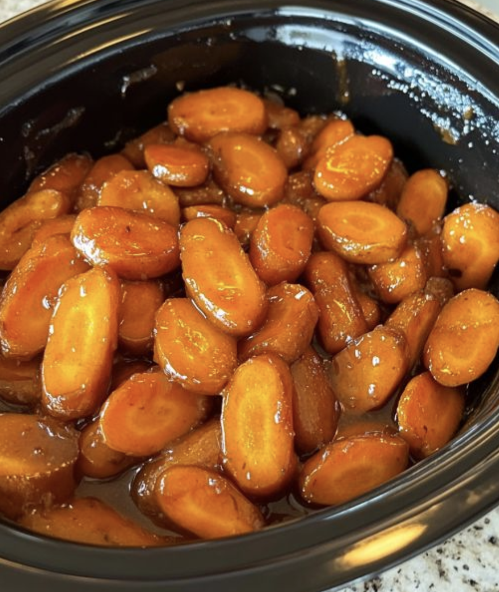
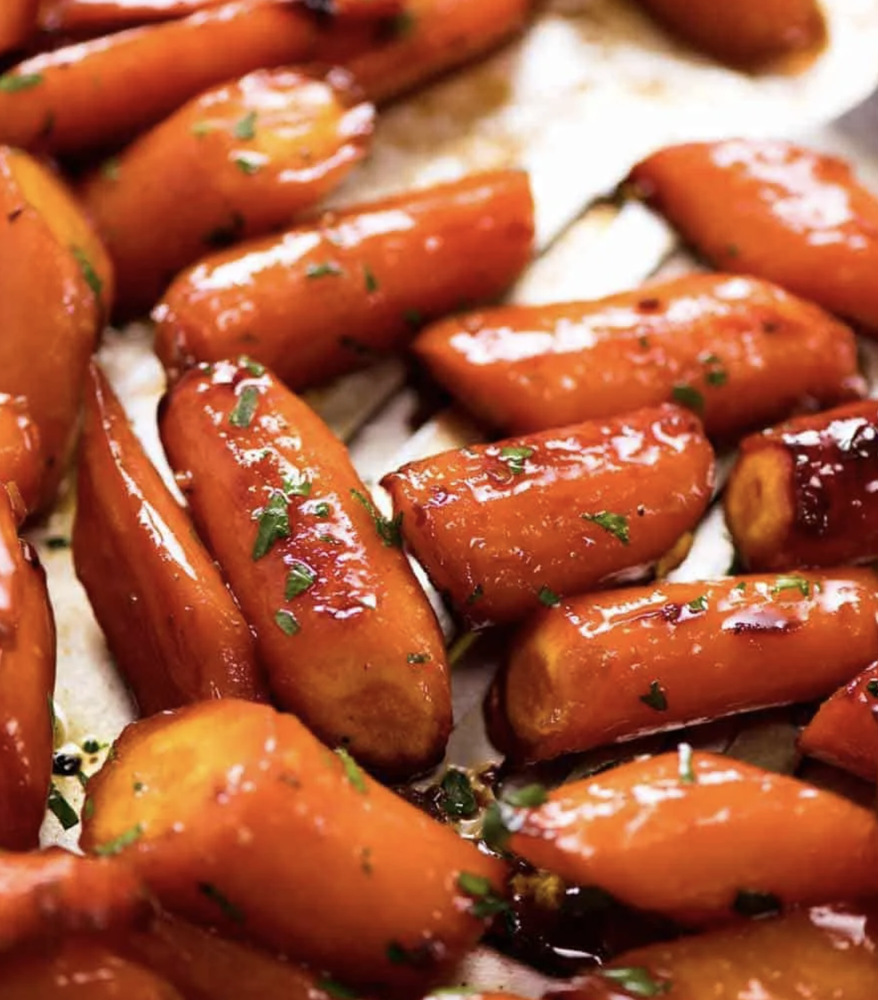

Vegetables

collard greens
Prep : 10min | Cook : 2hours 30min
stir fry vegetables
Prep : 10min | Cook : 20min
roasted zucchini and mixed vegetables
Prep : 15min | Cook : 60min

roasted vegetables
Prep : 10min | Cook : 40min
crunchy broccoli
Prep : 5min | Cook : 30min
glazed carrots (crock pot)
Prep : 15min | Cook : 5hours
brown sugar glazed carrots
Prep : 10min | 25min